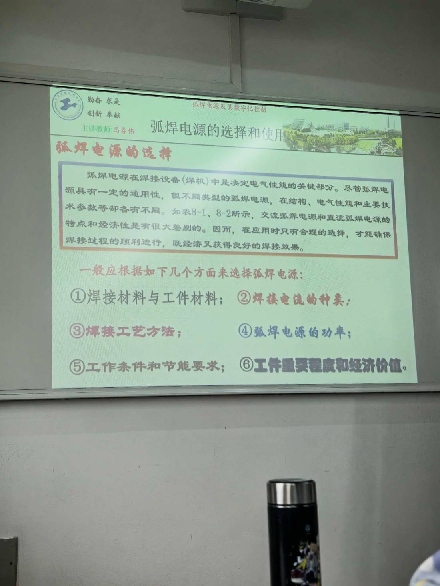

13 手写笔记/课堂实拍/kt-08 弧焊电源的选择（六条依据）
kt-08 弧焊电源的选择（六条依据）
📷 课堂实拍 · 老师标注为重点（原图见下；文字为转录，公式/接点以图为准）
弧焊电源的选择（六条依据）

实拍转录
- 标题：弧焊电源的选择和使用 → 红字：弧焊电源的选择。
- 正文：弧焊电源在焊接设备（焊机）中是决定电气性能的关键部分。尽管不同型号的弧焊电源都具有一定的通用性，但不同类型的弧焊电源，在结构、电气性能和主要技术参数等却各有不同。如表 8-1、8-2 所示，交流弧焊电源和直流弧焊电源的特点和经济性是有很大差别的。因而，在应用时只有合理的选择，才能确保焊接过程的顺利进行，既经济又获得良好的焊接效果。
- 一般应根据如下几个方面来选择弧焊电源：① 焊接材料与工件材料；② 焊接电流的种类；③ 焊接工艺方法；④ 弧焊电源的功率；⑤ 工作条件和节能要求；⑥ 工件重要程度和经济价值。
本页重点
- 六条依据是标准答题口径，顺序别乱：材料 → 电流种类 → 工艺方法 → 功率 → 工况与节能 → 重要程度与经济性。
- 总纲一句话：电源是焊机电气性能的决定部分，选错＝工艺和经济双输。
- "通用性有限"是前提：交流与直流电源在特点与经济性上差别很大（表 8-1、8-2）。
考点（怎么考）
- 简答/论述：选择弧焊电源应从哪几方面考虑（六条）。
- 结合工艺举例：焊条电弧焊、TIG、CO₂、埋弧各选什么电源与特性。
对应讲义页
关联
- 概念卡：弧焊电源 · 弧焊电源的分类 · 外特性形状的选择
- 讲义：00 第1章 绪论 导航 · 总览：课堂实拍总览
- 索引：01 弧焊电源 MOC · 课件标红总表